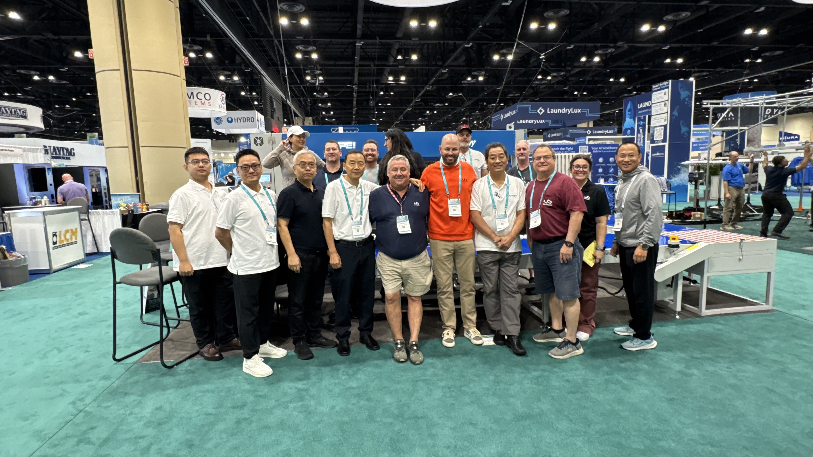
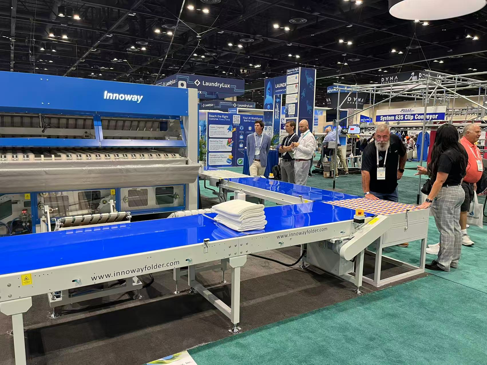
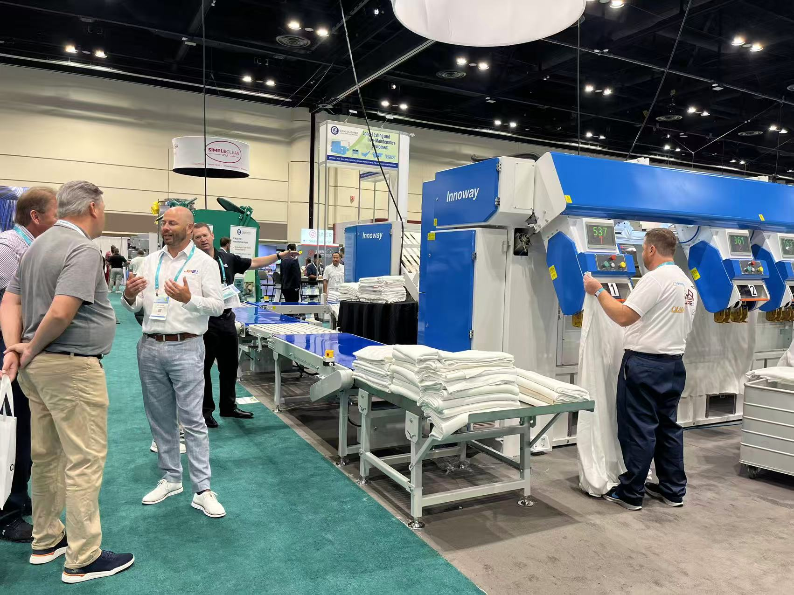

Innoway Shines at Clean Show Orlando USA
August 26, 2025
From August 23 to 26, 2025, Innoway, in partnership with its US agent JPE Company, made a stunning appearance at the Clean Show held in Orlando, USA, showcasing core products such as feeder, folder and intelligent conveying complete lines. Relying on cutting-edge technological innovation and outstanding on-site performance, the company garnered extensive attention from the industry and successfully demonstrated the global competitiveness of Chinese intelligent laundry equipment enterprises. As the top professional exhibition for the North American laundry and textile care industry, the Clean Show brings together the world's leading manufacturers, suppliers and industry experts in this field, serving as a crucial platform for enterprises to expand the North American market and display their core strengths.
Highlighted Intelligent Folder Forges a Super Competitive Product
At this exhibition, the folder exhibited by Innoway became the focus of the show. With its core technological advantages, it has emerged as one of the most competitive products at the exhibition. Equipped with a built-in dual lower stacking function, the folder also integrates a chip automatic identification and reading function, which can realize the classified stacking of linens with or without chips, meeting the high-quality demands of the North American market for intelligent and efficient equipment. Its technical advantages are comparable to those of international high-end similar products.
In the on-site practical demonstration, the accurate operation and stable performance of the folder were fully demonstrated. Its high folding efficiency, precise operation accuracy and intelligent operation mode left a deep impression on the professional audience on site, distinguishing it significantly from similar competitive products. It became one of the core highlights during the exhibition, fully reflecting Innoway's in-depth technical research and innovative strength in the field of folding equipment.
Innovative Breakthroughs in Intelligent Conveying Complete Lines Empower Efficiency Upgrading
In addition to the core folder, the intelligent conveying complete line exhibited by Innoway also attracted much attention. Relying on innovative breakthroughs in control technology, it breaks the bottlenecks of low efficiency and poor flexibility of traditional conveying systems, becoming another major highlight on site. Adopting an optimized control algorithm and modular design, the intelligent conveying complete line can achieve seamless connection with spreaders and folders, build a complete automated operation process, greatly reduce manual intervention, effectively improve the overall operation efficiency, and perfectly adapt to the large-scale and automated production needs of North American laundry enterprises.
Through on-site operation demonstrations, the advantages of the intelligent conveying complete line in stability, flexibility and intelligent control were fully unleashed. Its characteristics of flexible adaptation to a variety of working scenarios and accurate material conveying have won unanimous recognition from professionals on site. The exhibition of this intelligent conveying complete line not only demonstrated Innoway's technical strength in the field of equipment integration, but also reflected the enterprise's in-depth insight into the needs of the North American market, providing local enterprises with efficient and intelligent automated solutions.




About Innoway
Innoway has over 20 years of expertise in R&D and manufacturing of automation technologies and products for flatwork finishing processes in the laundry industry. As a top-tier manufacturer in China with leading R&D capabilities in this field, the company consistently listens to customer needs and delivers products and services driven by innovation and reliable quality. Its products are widely exported to major global markets including the United States, Europe, and Southeast Asia.